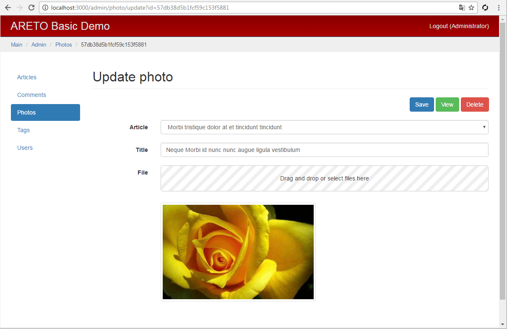

Photo controller
The PhotoController class defines a controller of photo model.
module/admin/controller/PhotoController.js

The actionCreate method creates a photo model.
The async.series array of asynchronous methods receives data
to select one article of the list (Article.findToSelect).
You can assign a photo to it.
module/admin/controller/PhotoController.js

The actionView method calls the parent to get necessary relations.
module/admin/controller/PhotoController.js

The actionUpload method uploads a file to server.
If the file is validated, a photo model will be created.
Initial model is not linked to any article.
module/admin/controller/PhotoController.js
The actionAssignMain method sets the main photo of article.
The forceSave function saves article without any data validation.
If photo is not related to any article, then set flash error messages (one-off message to a user session),
and user will be redirected to viewing page.
module/admin/controller/PhotoController.js